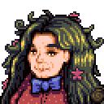

Birdie
Zur Navigation springen
Zur Suche springen
| Birdie | |
 | |
| Information
| |
| Geburtstag | Unbekannt |
| Lebt in | Ingwerinsel |
| Adresse | Insel West |
| Ehe | Nein |
| Beste Geschenke | N/A |
| “ | “"Hast Du das Schiffswrack an der Südküste gesehen? Mein Mann war der Kapitän. Ein Pirat war er. Eines Tages stach er in See und kehrte nie zurück."” |
| — Birdie |
Birdie ist eine alte Frau, die in einer Hütte auf der Ginger-Insel lebt, ganz im Westen der Insel. Wenn Sie mit ihr sprechen, beginnt die "Die Ehefrau des Piraten"-Quest. Wenn man ihr das Medaillon des Piraten gibt, wird die Quest beendet.
Birdie kann nicht gefunden werden, wenn es auf den Farninseln regnet.
Nach Abschluss der Quest kann Birdie beim Fischen am Strand gesehen werden und man kann mit ihr sprechen, aber ihr keine Geschenke machen.
Quest
- Hauptartikel: Aufträge#Liste von Geschichtsaufträgen
Konversation
| “ | “Ich hätte nie gedacht, dass ich ein neues Gesicht auf dieser Insel sehen würde, Liebes. Aber ich bin froh, dass du hier bist!” |
| “ | “Es wird gemunkelt, dass vor langer Zeit eine große Zivilisation von Zwergen auf genau dieser Insel lebte. Warst du im Inneren des Vulkans? Er ist gefüllt mit den Ruinen ihrer seltsamen Maschinen...” |
| “ | “Wenn du dich jemals mulmig im Magen fühlen, wirkt ein Bissen Ingwer wahre Wunder...” |
| “ | “Warst du schon beim geheimen Schrein im Dschungel? Die Blumen dort duften herrlich... Es ist einer meiner Lieblingsorte auf der Insel.” |
| “ | “Jeden Morgen zum Frühstück esse ich eine Schüssel Poi und ein Glas frisch gepressten Mangosaft. Das hält mich jung!” |
| “ | “Ich gehe jeden Tag am Strand entlang, um zu sehen, ob etwas Neues angeschwemmt wurde. Es treibt eine Menge da draußen herum!” |
| “ | “Meine Hütte mag klein sein, aber sie ist mehr als genug für das, was ich brauche. Und das Beste ist, ich habe sie selbst gebaut.” |
| “ | “*seufz* In einer Welt voller endloser Möglichkeiten zu leben, wir können nie wissen, ob wir die richtigen Entscheidungen getroffen haben. Verzeih die Störung, mein Lieber. Ich lasse mich manchmal von Gedanken hinreißen...” |
| “ | “Obst, Fisch und Wildfutter... Es ist eine gute Diät! Ich fühle mich so gesund wie immer.” |
| “ | “Das Wetter ist das ganze Jahr über warm und schön, mein Lieber... es fühlt sich perfekt für meine Knochen an...” |
| “ | “Hast du den kleinen Bananenaltar im Dschungel gesehen? Wenn ich eine Banane hätte, würde ich sie dort hinlegen und sehen, was passiert... heh heh...” |
| “ | “Hallo, mein Lieber... du siehst heute gesund und gut gelaunt aus!” |
| “ | “Es ist Vollmond, heute Nacht... Ob dein Glück gut oder schlecht ist, sei auf der Hut, mein Lieber... Die Geister sind unruhig.” |
| “ | “Ich bin schon so lange hier, ich kann nicht mal mehr das Meer hören...” |
Schenken
| “ | “Oh, nein, nein, nein... Ich brauche keine Geschenke, mein Lieber. Behalte es.” |
Portraits
History
- 1.5: Eingeführt.
| Dorfbewohner | |
|---|---|
| Junggesellen | Alex • Elliott • Harvey • Sam • Sebastian • Shane |
| Junggesellinnen | Abigail • Emily • Haley • Leah • Maru • Penny |
| Stadtbewohner | Caroline • Clint • Demetrius • Evelyn • George • Gil • Gunther • Gus • Jas • Jodi • Kent • Lewis • Linus • Marlon • Marnie • Morris • Pam • Pierre • Robin • Vincent • Willy |
| Andere | Alter Seemann • Birdie • Gefolgsmann • Gouverneur • Junimos • Krobus • Leo • Mr. Qi • Opa • Professor Schnecke • Sandy • Türsteher • Zauberer • Zwerg |